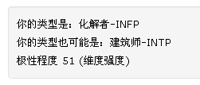
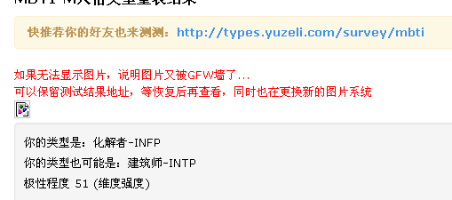

Conversation with 81184027 at Mon 18 Aug 2014 01:58:15 PM CST on 154115835 (webqq)
(01:56:32 PM) 小绵羊: 信错了!做好事变成了坏事!
(01:57:46 PM) 小绵羊: 你成了拐卖儿童的疑犯!
(01:59:13 PM) 小绵羊: 这是一天主教神甫在做转化工作时给我们打的比喻!
(01:58:54 PM) 光: 嗯
(02:02:11 PM) 醒悟: :D分便，大便还差不多!真天那么多心眼人不累死
(02:03:40 PM) 小绵羊: :)
(02:03:41 PM) 醒悟: 拿故事洗脑邪教最常用手法
(02:00:41 PM) 光: 人都是自救的
(02:01:03 PM) 光: 连饭我都要自己动手张嘴才能吃到的
(02:04:49 PM) 醒悟: 神话故事，谁信谁:D吃喝神话
(02:03:03 PM) 光: 助力会有
(02:06:13 PM) 小绵羊: 邪教有—套自我洗脑(暗示，见证)的理论和方法!
(02:03:11 PM) 光: 主因在自己
(02:03:36 PM) 光: 放弃自救了，那就谁都救不了了
(02:07:23 PM) 福建-福州&水浒: :D
(02:04:24 PM) 光: :face14:
(02:07:53 PM) 福建-福州&水浒: 我感觉光哥在骂人:D
(02:07:57 PM) 福建-福州&水浒: :-D
(02:04:59 PM) 光: 是这个道理啊
(02:08:07 PM) 蛋包飯:
(02:05:06 PM) 光: 你想以前的皇帝
(02:05:12 PM) 光: 一个人有那么多的医生
(02:08:19 PM) 福建-福州&水浒: 认同
(02:05:23 PM) 光: 不是该死还是死
(02:05:35 PM) 光: 寿命还不如普通百姓
(02:08:54 PM) 福建-福州&水浒: 嗯
(02:05:52 PM) 光: 嗯
(02:06:35 PM) 光: 相反老百姓不做愚蠢的事情
(02:06:39 PM) 光: 老老实实过日子
(02:09:59 PM) 小绵羊: 溺水者连手都不愿伸出来抓漂浮物或岸上人伸出的竹杆，救生绳!那还有谁救得了她!我想:只有上帝了!
(02:07:09 PM) 光: 颐享天年也很多啊
(02:10:36 PM) 蛋包飯: 皇帝御女太多，吃的太好，短寿的多。
(02:07:41 PM) 光: 嗯
(02:07:54 PM) 光: 长寿的关键是不要做蠢事情
(02:08:16 PM) 光: 避祸的关键也是如此
(02:11:46 PM) 醒悟: 短时间内享受一切，生命短但活的快乐:D
(02:08:43 PM) 光: 至于做不做，绝对是个人选择的问题
(02:09:36 PM) 光: 同样一个医生，在民间可以帮很多人
(02:09:46 PM) 光: 在皇宫一个皇帝都治疗不好
(02:09:50 PM) 光: 啥原因
(02:10:49 PM) 光: 这货（皇帝）自己作死啊
(02:13:56 PM) 醒悟: 人家不是病死得，是爽死得当然救不了
(02:14:07 PM) 蒲公英的旅行: 呵呵
(02:11:31 PM) 光: 嗯
(02:15:50 PM) 蛋包飯: :D爽死
(02:17:27 PM) 蒲公英的旅行: 哈哈
(02:19:19 PM) 蒲公英的旅行: 这里面藏龙卧虎啊
(02:16:27 PM) 光: :face14:
(02:19:35 PM) 醒悟: 兄弟想救你女朋办法只有一个，从神的人变成你的人。用钱，用嘴，用屌能成就行。做人靠手段
(02:20:11 PM) 蒲公英的旅行: 哈哈
(02:20:18 PM) 蒲公英的旅行: 不可不可
(02:20:37 PM) 蒲公英的旅行: 她的思维和我一样我相信她
(02:20:52 PM) 醒悟: :D那你瞎起劲
(02:21:11 PM) 蒲公英的旅行: 没你起劲啊
(02:22:45 PM) 醒悟: 她要爱上你爱到父母不要神不要那就成了
(02:23:19 PM) 醒悟: 提升了你的花功，也救了人
(02:24:09 PM) 蒲公英的旅行: 呵呵
(02:28:16 PM) 醒悟: 她们信神也叫爱神!说是爱神说白了爱神传说中的好处，人走不出利益!都是很自私心理不健康的人才须要信神
(02:29:11 PM) 醒悟: 要找坏人到庙里就这道理
(03:02:46 PM) 光: T擅长衡量得失，判断N想出来的点子是不是可行。高T的人群，逻辑推理能力很好，思考问题很有条理、有顺序。一个想法从N里面诞生出来，先要经过T的审核，然后死掉一片~ 然后S开始工作，收集数据啊，完善细节啊，终于一个想法变成了现实。但是最后还要经过F的检验，也就是要获得众人的口碑，才真正算成功。
(03:03:47 PM) 光: 光有T型人和N型人不够
(03:03:55 PM) 光: 还要有S型和F型
(03:07:05 PM) 蒲公英的旅行: 很不错的一个流程
(03:04:03 PM) 光: 要做成一件事
(03:04:11 PM) 光: 需要各种类型的人才行
(03:04:14 PM) 光: 嗯
(03:07:24 PM) 蒲公英的旅行: 嗯 一个人的思维是有限的
(03:04:21 PM) 光: 我是N型人
(03:04:28 PM) 光: 也是T型人
(03:04:34 PM) 光: 我的弱项是S和F
(03:04:51 PM) 光: 所以我是小众人群
(03:05:29 PM) 光: 要多物色S型和F型的朋友加入
(03:05:42 PM) 光: 对我而言绝对是有利的补充
(03:06:45 PM) 光: 然后S开始工作，收集数据啊，完善细节啊，终于一个想法变成了现实
(03:09:52 PM) 蒲公英的旅行: 我觉得我S和N稍微好点
(03:06:55 PM) 光: 这是两类人群
(03:07:08 PM) 光: N型人人口的30%
(03:07:21 PM) 光: S型人人口的70%
(03:10:32 PM) 蒲公英的旅行: 哦 是T 和 N
(03:07:30 PM) 光: 这两类人有本质的不同
(03:10:49 PM) 小绵羊: 什么是S，N，T?
(03:07:45 PM) 光: F和T也是两类人群
(03:08:05 PM) 光: S是现实主义的人群
(03:08:10 PM) 光: N是理想主义的人群
(03:08:20 PM) 光: F是感情
(03:08:23 PM) 光: T是理性
(03:08:28 PM) 光: F是感性
(03:08:52 PM) 光: (03:04:21 PM) 光: 我是N型人
(03:04:28 PM) 光: 也是T型人
(03:09:00 PM) 光: NT就是 理性理想主义
(03:12:22 PM) 蒲公英的旅行: 哦
(03:09:24 PM) 光: SF 感性现实主义
(03:12:35 PM) 憧憬￠未来: 你们在讨论什么型
(03:12:37 PM) 憧憬￠未来: SF?
(03:12:43 PM) 小绵羊: 哈哈，我外语不及格
(03:12:55 PM) 憧憬￠未来: SB型:$
(03:09:51 PM) 光: ST就是理性现实主义
(03:10:06 PM) 光: NF感性理想主义
(03:10:37 PM) 光: 然后S开始工作，收集数据啊，完善细节啊，终于一个想法变成了现实。但是最后还要经过F的检验，也就是要获得众人的口碑，才真正算成功。
(03:13:45 PM) 憧憬￠未来: 怎么测试呀
(03:10:45 PM) 光: MBTI啊
(03:13:50 PM) 蒲公英的旅行: 有意思
(03:13:59 PM) 蒲公英的旅行: 一定赶快加入
(03:11:17 PM) 光: MBTI测试
MBTI职业性格测试完整版: http://types.yuzeli.com/survey/mbti88/
MBTI-M人格类型量表： http://types.yuzeli.com/survey/MBTI/
凯尔西气质类型测试： http://types.yuzeli.com/survey/keirsey/
(03:11:23 PM) 光: 这个随便找一个就可以了
(03:12:10 PM) 光: 所以一个组织光有N\T型人不够的还要有S\F型人
(03:12:55 PM) 光: 我以前有一个朋友就是典型的S型人
(03:12:58 PM) 光: 和我两种风格
(03:16:06 PM) 憧憬￠未来: 哦哦
(03:16:07 PM) 憧憬￠未来: 我试试
(03:13:03 PM) 光: 嗯
(03:13:15 PM) 光: 我们彼此能看到对方的不足
(03:13:17 PM) 光: 非常直接
(03:13:45 PM) 光: 他是ST我是NT
(03:14:13 PM) 光: 然后S开始工作，收集数据啊，完善细节啊，终于一个想法变成了现实。
(03:14:19 PM) 光: 这部分工作他比我厉害多了
(03:14:45 PM) 光: 高T的人群，逻辑推理能力很好，思考问题很有条理、有顺序。
(03:14:54 PM) 光: T的部分又是我们共通的地方
(03:15:24 PM) 光: 最后唯一缺乏的就是F了
(03:21:50 PM) 此去经年: l高N高F低J低
(03:19:01 PM) 光: e你
(03:19:03 PM) 光: 嗯
(03:25:20 PM) 憧憬￠未来: 这个是？
(03:22:35 PM) 光: 你的F和T和平均
(03:22:40 PM) 光: 很
(03:26:00 PM) 憧憬￠未来: F T指什么
(03:23:02 PM) 光: 感性和理性
(03:26:23 PM) 此去经年: 那就是知性
(03:26:59 PM) 憧憬￠未来: 极性强度是什么意思？
(03:24:08 PM) 光: 我也不了解
(03:24:15 PM) 光: 维度强度
(03:24:25 PM) 光: 这个要看你的具体指数了
(03:27:34 PM) 憧憬￠未来: 没有图片
(03:24:33 PM) 光: 哦
(03:27:38 PM) 憧憬￠未来: 
(03:24:40 PM) 光: 隐秘掉了
(03:27:45 PM) 此去经年: 知性”，德文原文Verstand，也经常被译为“理智”或“悟性”。知性一词，原本是德国古典哲学常用的术语。康德认为知性是介于感性和理性之间的一种认知能力。
(03:27:47 PM) 憧憬￠未来: http://types.yuzeli.com/survey/mbti/21678221
(03:25:09 PM) 光: 如果无法显示图片，说明图片又被GFW墙了...
可以保留测试结果地址，等恢复后再查看，同时也在更换新的图片系统
(03:25:26 PM) 光: 那么说明他的程序在境外
(03:26:18 PM) 光: 我看到了
(03:29:32 PM) 憧憬￠未来: 可以截个图么
(03:26:33 PM) 光: 你的T和F是正好的
(03:26:40 PM) 光: ok
(03:30:58 PM) 此去经年: P这个怎么理解
(03:31:11 PM) 此去经年: 知觉是什么
(03:28:07 PM) 光: 随意吧
(03:28:41 PM) 光: 中国文化，比较随意
(03:28:46 PM) 光: 道家
(03:28:49 PM) 光: 道法自然
(03:28:58 PM) 光: 不刻意
(03:32:43 PM) 憧憬￠未来: 嗯
(03:32:43 PM) 此去经年: 相对于J就是随和，不讲究那些.....
(03:32:55 PM) 憧憬￠未来: 我要出去看现场了
(03:32:56 PM) 憧憬￠未来: 光哥
(03:32:59 PM) 憧憬￠未来: 帮我截图呀
(03:29:59 PM) 光: 我在linux下
(03:30:11 PM) 光: 我要上传到图床
(03:30:15 PM) 光: 不能截图
(03:30:44 PM) 光: http://imagebin.org/317738
(03:30:45 PM) 光: 好了
(03:33:51 PM) 憧憬￠未来: 哦
(03:30:48 PM) 光: 你自己看吧
(03:33:59 PM) 憧憬￠未来: 谢谢
(03:31:00 PM) 光: 你的T和F是正好的
(03:31:12 PM) 光: 你的P怎么这么厉害
(03:31:16 PM) 光: 100%
(03:31:26 PM) 光: N也很强
(03:31:30 PM) 光: 81
(03:31:35 PM) 光: 不错
(03:35:22 PM) 憧憬￠未来: 感知是不是我判断靠感觉？
(03:32:28 PM) 光: 嗯
(03:32:35 PM) 光: 你的直觉很强
(03:35:56 PM) 憧憬￠未来: 哦 那等于缺乏判断
(03:33:01 PM) 光: 判断是J
(03:33:08 PM) 光: 你的J很差
(03:33:11 PM) 光: 0
(03:36:30 PM) 憧憬￠未来: 额 好吧。。
(03:36:34 PM) 此去经年: 0——这都可以
(03:36:48 PM) 憧憬￠未来: 有时候最决定有点南
(03:36:49 PM) 憧憬￠未来: 难
(03:36:53 PM) 憧憬￠未来: 我先出去看现场了
(03:33:51 PM) 光: 嗯
(03:36:56 PM) 憧憬￠未来: 回来聊哦光哥
(03:33:57 PM) 光: 行
(03:49:59 PM) 此去经年: 懂了，p更倾向理解，F更倾向做判断，可以这么说吗
(03:48:03 PM) 光: 不是
(03:48:50 PM) 光: http://book.douban.com/subject/5906066/
(03:48:53 PM) 光: 这本书入门的
(03:48:58 PM) 光: 你可以找来读读
(03:51:26 PM) 此去经年: (#201351) 那是什么
(03:49:33 PM) lost message from #201354 to #201354
(03:52:24 PM) 此去经年: 好的，我看看
(03:49:44 PM) 光: http://pan.baidu.com/wap/shareview?&shareid=988861870&uk=1664748141&dir=%2F%E8%80%81%E6%86%A8%E7%9A%84%E8%97%8F%E5%AE%9D%E5%B1%8B%2F%E7%94%B5%E5%AD%90%E4%B9%A6%E7%B1%8D%2F%E7%BD%91%E5%8F%8B%E6%8E%A8%E8%8D%90&page=1&num=20&fsid=2630572600&third=4
(03:49:48 PM) 光: 这是电子版
(03:53:52 PM) 此去经年: 哇 好书 谢谢
(03:50:53 PM) 光: 嗯
(04:08:03 PM) 上善若水: 【善事一桩实属罕见】8月12日，中国边防武警在中国和老挝边境抓获11名来自朝鲜的脱北者，大多为二三十岁的年轻女性，包括一名4岁儿童。这些脱北者意志坚决，宁死也不愿回朝鲜，中国政府也罕见地网开一面，没有强行送回朝鲜而是交给了韩国政府。这不是一件小事，它很可能标志着金三政权的累卵之危临近了
(04:11:01 PM) 憧憬￠未来: 光哥
(04:11:14 PM) 憧憬￠未来: 那我适合干什么？
(04:09:23 PM) 光: 你 九型人格测试 http://www.apesk.com/ninehouse/
(04:09:33 PM) 光: 这个你做一下
(04:14:01 PM) 憧憬￠未来: 我在车上，手机
(04:14:05 PM) 憧憬￠未来: 回去做吧
(04:12:43 PM) 光: 好
(04:40:11 PM) 蛋包飯:
(05:03:25 PM) 上善若水:
(05:06:06 PM) 福建-福州&水浒: 有衔接吗
(05:06:11 PM) 福建-福州&水浒: 包饭
(05:12:14 PM) 福建-福州&水浒: 看到了，这个是我镇上的消息
(05:58:02 PM) lost message from #201373 to #201373
(06:01:07 PM) 蛋包飯: :D欢迎菅野友也:D
(06:01:42 PM) 蛋包飯: 欢迎日本友人---菅野友也
(06:00:58 PM) lost message from #201376 to #201376
(06:04:03 PM) 蛋包飯: すごい! 韓国語,広東語,中国語ができます
(06:04:29 PM) 2456426104: 他にも、上海語と闽南话を喋りました。下手だけど。
(06:04:43 PM) 2456426104: @)
(06:05:10 PM) 蛋包飯: 厉害，会上海话。群里有上海人可以听明白
(06:05:41 PM) lost message from #201381 to #201385
(06:08:38 PM) 蛋包飯: 他中文不太好。会打中文么？
(06:08:19 PM) 福建-福州&水浒: (#201383)打中文吧，
(06:08:31 PM) 福建-福州&水浒: (#201384)谁是日本人;X
(06:08:35 PM) 福建-福州&水浒: (#201385)???
(06:08:48 PM) 福建-福州&水浒: 发错表情了
(06:09:09 PM) 蛋包飯: ---日本人---菅野友也
(06:09:23 PM) 福建-福州&水浒: :share:
(06:09:35 PM) 蛋包飯: :D他一直说尊敬语
(06:09:37 PM) 2456426104: :share:
(06:09:59 PM) 蛋包飯: 跟大家不太熟的时候，日本人都是用尊敬语来说话的。
(06:09:59 PM) 福建-福州&水浒: 日语我不懂～～～
(06:10:11 PM) 蛋包飯: 他进来学中文的:D
(06:10:16 PM) 福建-福州&水浒: 欧，这样啊
(06:09:55 PM) lost message from #201396 to #201396
(06:13:00 PM) 蛋包飯: 菅野さん，中国大陸には[全能神]というカルトがあります.ここの中国人は多分被害者でございます.
(06:13:02 PM) 2456426104: 汉语超级难!
(06:13:13 PM) 蛋包飯: :D呵呵:D
(06:13:24 PM) 福建-福州&水浒: 这句看懂了:D
(06:13:31 PM) 2456426104: え、本当？ 恐い！:L
(06:13:34 PM) 蛋包飯: 呵呵，他会简单的汉语。
(06:13:56 PM) 福建-福州&水浒: 多练习就会了嘛
(06:14:06 PM) 福建-福州&水浒: :D
(06:14:19 PM) 蛋包飯: [全能神]というカルトが恐ろしいのです!
(06:14:34 PM) 2456426104: 你们是邪教宗教团体的受害者吗？:可怜:
(06:14:43 PM) 福建-福州&水浒: 不
(06:14:48 PM) 蛋包飯: 嗯，大部分是！哇塞，这句汉语打出来，大家都看懂了
(06:15:56 PM) 2456426104: ”全能”的不是共产党吗？
(06:16:11 PM) 蛋包飯: :D:D:D哈哈哈，
(06:16:24 PM) 福建-福州&水浒: 扼杀正信自由，邪教必然产生